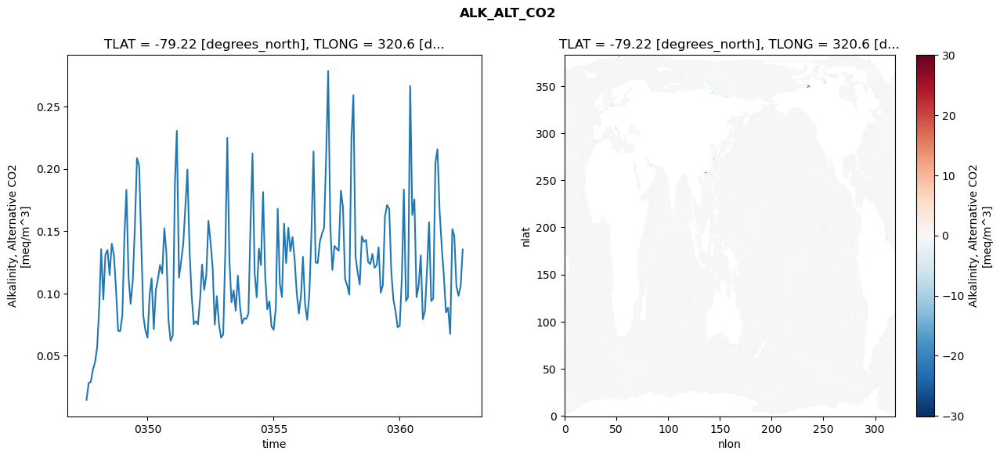
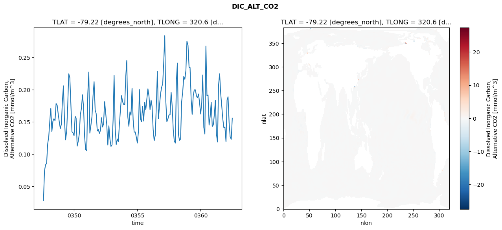
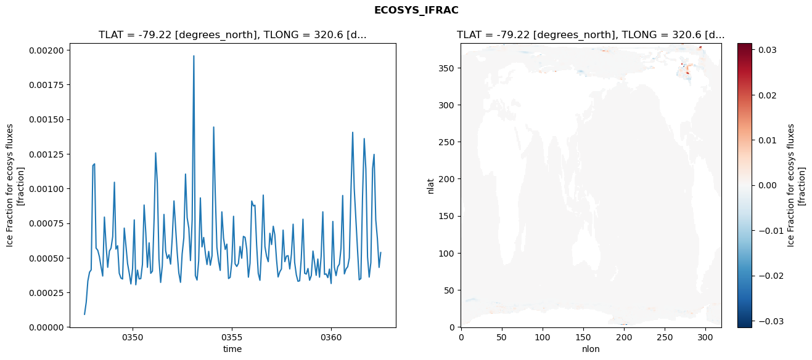

glb-dor_North_Atlantic_basin_019_1999-07-01_00078#
Simulation details#
Case: smyle.cdr-atlas-v0.glb-dor_North_Atlantic_basin_019_1999-07-01_00078.001
Basin: North_Atlantic_basin
Polygon: 19.0
Start date: 1999-07
Show code cell source Hide code cell source
import xarray as xr
import matplotlib.pyplot as plt
Show code cell source Hide code cell source
zarr_store = "/path/to/zarr/store"
# Parameters
zarr_store = "/global/cfs/projectdirs/m4746/Projects/Ocean-CDR-Atlas-v0/data/validation/smyle.cdr-atlas-v0.glb-dor_North_Atlantic_basin_019_1999-07-01_00078.001.validation.zarr"
Show code cell source Hide code cell source
%%time
ds_o = xr.open_zarr(zarr_store).compute()
ds_o
CPU times: user 663 ms, sys: 476 ms, total: 1.14 s
Wall time: 1.35 s
<xarray.Dataset> Size: 2MB
Dimensions: (nlat: 384, nlon: 320, time: 180)
Coordinates:
TLAT float64 8B -79.22
TLONG float64 8B 320.6
ULAT float64 8B -78.95
ULONG float64 8B 321.1
* time (time) object 1kB 0347-08-01 00:00:00 ... 0362-07-01 0...
z_t float32 4B 500.0
Dimensions without coordinates: nlat, nlon
Data variables:
ALK_ALT_CO2_diff (nlat, nlon) float32 492kB nan nan nan ... nan nan nan
ALK_ALT_CO2_rmse (time) float64 1kB 0.01459 0.02804 ... 0.1057 0.1353
DIC_ALT_CO2_diff (nlat, nlon) float32 492kB nan nan nan ... nan nan nan
DIC_ALT_CO2_rmse (time) float64 1kB 0.02778 0.07433 ... 0.1232 0.1558
ECOSYS_IFRAC_diff (nlat, nlon) float32 492kB nan nan nan ... nan nan nan
ECOSYS_IFRAC_rmse (time) float64 1kB 9.17e-05 0.0001789 ... 0.0005375
FG_ALT_CO2_diff (nlat, nlon) float32 492kB nan nan nan ... nan nan nan
FG_ALT_CO2_rmse (time) float64 1kB 3.609e-06 9.094e-06 ... 1.181e-05xarray.Dataset
- nlat: 384
- nlon: 320
- time: 180
- TLAT()float64-79.22
- long_name :
- array of t-grid latitudes
- units :
- degrees_north
array(-79.22052261)
- TLONG()float64320.6
- long_name :
- array of t-grid longitudes
- units :
- degrees_east
array(320.56250892)
- ULAT()float64-78.95
- long_name :
- array of u-grid latitudes
- units :
- degrees_north
array(-78.95289509)
- ULONG()float64321.1
- long_name :
- array of u-grid longitudes
- units :
- degrees_east
array(321.12500894)
- time(time)object0347-08-01 00:00:00 ... 0362-07-...
- bounds :
- time_bound
- long_name :
- time
array([cftime.DatetimeNoLeap(347, 8, 1, 0, 0, 0, 0, has_year_zero=True), cftime.DatetimeNoLeap(347, 9, 1, 0, 0, 0, 0, has_year_zero=True), cftime.DatetimeNoLeap(347, 10, 1, 0, 0, 0, 0, has_year_zero=True), cftime.DatetimeNoLeap(347, 11, 1, 0, 0, 0, 0, has_year_zero=True), cftime.DatetimeNoLeap(347, 12, 1, 0, 0, 0, 0, has_year_zero=True), cftime.DatetimeNoLeap(348, 1, 1, 0, 0, 0, 0, has_year_zero=True), cftime.DatetimeNoLeap(348, 2, 1, 0, 0, 0, 0, has_year_zero=True), cftime.DatetimeNoLeap(348, 3, 1, 0, 0, 0, 0, has_year_zero=True), cftime.DatetimeNoLeap(348, 4, 1, 0, 0, 0, 0, has_year_zero=True), cftime.DatetimeNoLeap(348, 5, 1, 0, 0, 0, 0, has_year_zero=True), cftime.DatetimeNoLeap(348, 6, 1, 0, 0, 0, 0, has_year_zero=True), cftime.DatetimeNoLeap(348, 7, 1, 0, 0, 0, 0, has_year_zero=True), cftime.DatetimeNoLeap(348, 8, 1, 0, 0, 0, 0, has_year_zero=True), cftime.DatetimeNoLeap(348, 9, 1, 0, 0, 0, 0, has_year_zero=True), cftime.DatetimeNoLeap(348, 10, 1, 0, 0, 0, 0, has_year_zero=True), cftime.DatetimeNoLeap(348, 11, 1, 0, 0, 0, 0, has_year_zero=True), cftime.DatetimeNoLeap(348, 12, 1, 0, 0, 0, 0, has_year_zero=True), cftime.DatetimeNoLeap(349, 1, 1, 0, 0, 0, 0, has_year_zero=True), cftime.DatetimeNoLeap(349, 2, 1, 0, 0, 0, 0, has_year_zero=True), cftime.DatetimeNoLeap(349, 3, 1, 0, 0, 0, 0, has_year_zero=True), cftime.DatetimeNoLeap(349, 4, 1, 0, 0, 0, 0, has_year_zero=True), cftime.DatetimeNoLeap(349, 5, 1, 0, 0, 0, 0, has_year_zero=True), cftime.DatetimeNoLeap(349, 6, 1, 0, 0, 0, 0, has_year_zero=True), cftime.DatetimeNoLeap(349, 7, 1, 0, 0, 0, 0, has_year_zero=True), cftime.DatetimeNoLeap(349, 8, 1, 0, 0, 0, 0, has_year_zero=True), cftime.DatetimeNoLeap(349, 9, 1, 0, 0, 0, 0, has_year_zero=True), cftime.DatetimeNoLeap(349, 10, 1, 0, 0, 0, 0, has_year_zero=True), cftime.DatetimeNoLeap(349, 11, 1, 0, 0, 0, 0, has_year_zero=True), cftime.DatetimeNoLeap(349, 12, 1, 0, 0, 0, 0, has_year_zero=True), cftime.DatetimeNoLeap(350, 1, 1, 0, 0, 0, 0, has_year_zero=True), cftime.DatetimeNoLeap(350, 2, 1, 0, 0, 0, 0, has_year_zero=True), cftime.DatetimeNoLeap(350, 3, 1, 0, 0, 0, 0, has_year_zero=True), cftime.DatetimeNoLeap(350, 4, 1, 0, 0, 0, 0, has_year_zero=True), cftime.DatetimeNoLeap(350, 5, 1, 0, 0, 0, 0, has_year_zero=True), cftime.DatetimeNoLeap(350, 6, 1, 0, 0, 0, 0, has_year_zero=True), cftime.DatetimeNoLeap(350, 7, 1, 0, 0, 0, 0, has_year_zero=True), cftime.DatetimeNoLeap(350, 8, 1, 0, 0, 0, 0, has_year_zero=True), cftime.DatetimeNoLeap(350, 9, 1, 0, 0, 0, 0, has_year_zero=True), cftime.DatetimeNoLeap(350, 10, 1, 0, 0, 0, 0, has_year_zero=True), cftime.DatetimeNoLeap(350, 11, 1, 0, 0, 0, 0, has_year_zero=True), cftime.DatetimeNoLeap(350, 12, 1, 0, 0, 0, 0, has_year_zero=True), cftime.DatetimeNoLeap(351, 1, 1, 0, 0, 0, 0, has_year_zero=True), cftime.DatetimeNoLeap(351, 2, 1, 0, 0, 0, 0, has_year_zero=True), cftime.DatetimeNoLeap(351, 3, 1, 0, 0, 0, 0, has_year_zero=True), cftime.DatetimeNoLeap(351, 4, 1, 0, 0, 0, 0, has_year_zero=True), cftime.DatetimeNoLeap(351, 5, 1, 0, 0, 0, 0, has_year_zero=True), cftime.DatetimeNoLeap(351, 6, 1, 0, 0, 0, 0, has_year_zero=True), cftime.DatetimeNoLeap(351, 7, 1, 0, 0, 0, 0, has_year_zero=True), cftime.DatetimeNoLeap(351, 8, 1, 0, 0, 0, 0, has_year_zero=True), cftime.DatetimeNoLeap(351, 9, 1, 0, 0, 0, 0, has_year_zero=True), cftime.DatetimeNoLeap(351, 10, 1, 0, 0, 0, 0, has_year_zero=True), cftime.DatetimeNoLeap(351, 11, 1, 0, 0, 0, 0, has_year_zero=True), cftime.DatetimeNoLeap(351, 12, 1, 0, 0, 0, 0, has_year_zero=True), cftime.DatetimeNoLeap(352, 1, 1, 0, 0, 0, 0, has_year_zero=True), cftime.DatetimeNoLeap(352, 2, 1, 0, 0, 0, 0, has_year_zero=True), cftime.DatetimeNoLeap(352, 3, 1, 0, 0, 0, 0, has_year_zero=True), cftime.DatetimeNoLeap(352, 4, 1, 0, 0, 0, 0, has_year_zero=True), cftime.DatetimeNoLeap(352, 5, 1, 0, 0, 0, 0, has_year_zero=True), cftime.DatetimeNoLeap(352, 6, 1, 0, 0, 0, 0, has_year_zero=True), cftime.DatetimeNoLeap(352, 7, 1, 0, 0, 0, 0, has_year_zero=True), cftime.DatetimeNoLeap(352, 8, 1, 0, 0, 0, 0, has_year_zero=True), cftime.DatetimeNoLeap(352, 9, 1, 0, 0, 0, 0, has_year_zero=True), cftime.DatetimeNoLeap(352, 10, 1, 0, 0, 0, 0, has_year_zero=True), cftime.DatetimeNoLeap(352, 11, 1, 0, 0, 0, 0, has_year_zero=True), cftime.DatetimeNoLeap(352, 12, 1, 0, 0, 0, 0, has_year_zero=True), cftime.DatetimeNoLeap(353, 1, 1, 0, 0, 0, 0, has_year_zero=True), cftime.DatetimeNoLeap(353, 2, 1, 0, 0, 0, 0, has_year_zero=True), cftime.DatetimeNoLeap(353, 3, 1, 0, 0, 0, 0, has_year_zero=True), cftime.DatetimeNoLeap(353, 4, 1, 0, 0, 0, 0, has_year_zero=True), cftime.DatetimeNoLeap(353, 5, 1, 0, 0, 0, 0, has_year_zero=True), cftime.DatetimeNoLeap(353, 6, 1, 0, 0, 0, 0, has_year_zero=True), cftime.DatetimeNoLeap(353, 7, 1, 0, 0, 0, 0, has_year_zero=True), cftime.DatetimeNoLeap(353, 8, 1, 0, 0, 0, 0, has_year_zero=True), cftime.DatetimeNoLeap(353, 9, 1, 0, 0, 0, 0, has_year_zero=True), cftime.DatetimeNoLeap(353, 10, 1, 0, 0, 0, 0, has_year_zero=True), cftime.DatetimeNoLeap(353, 11, 1, 0, 0, 0, 0, has_year_zero=True), cftime.DatetimeNoLeap(353, 12, 1, 0, 0, 0, 0, has_year_zero=True), cftime.DatetimeNoLeap(354, 1, 1, 0, 0, 0, 0, has_year_zero=True), cftime.DatetimeNoLeap(354, 2, 1, 0, 0, 0, 0, has_year_zero=True), cftime.DatetimeNoLeap(354, 3, 1, 0, 0, 0, 0, has_year_zero=True), cftime.DatetimeNoLeap(354, 4, 1, 0, 0, 0, 0, has_year_zero=True), cftime.DatetimeNoLeap(354, 5, 1, 0, 0, 0, 0, has_year_zero=True), cftime.DatetimeNoLeap(354, 6, 1, 0, 0, 0, 0, has_year_zero=True), cftime.DatetimeNoLeap(354, 7, 1, 0, 0, 0, 0, has_year_zero=True), cftime.DatetimeNoLeap(354, 8, 1, 0, 0, 0, 0, has_year_zero=True), cftime.DatetimeNoLeap(354, 9, 1, 0, 0, 0, 0, has_year_zero=True), cftime.DatetimeNoLeap(354, 10, 1, 0, 0, 0, 0, has_year_zero=True), cftime.DatetimeNoLeap(354, 11, 1, 0, 0, 0, 0, has_year_zero=True), cftime.DatetimeNoLeap(354, 12, 1, 0, 0, 0, 0, has_year_zero=True), cftime.DatetimeNoLeap(355, 1, 1, 0, 0, 0, 0, has_year_zero=True), cftime.DatetimeNoLeap(355, 2, 1, 0, 0, 0, 0, has_year_zero=True), cftime.DatetimeNoLeap(355, 3, 1, 0, 0, 0, 0, has_year_zero=True), cftime.DatetimeNoLeap(355, 4, 1, 0, 0, 0, 0, has_year_zero=True), cftime.DatetimeNoLeap(355, 5, 1, 0, 0, 0, 0, has_year_zero=True), cftime.DatetimeNoLeap(355, 6, 1, 0, 0, 0, 0, has_year_zero=True), cftime.DatetimeNoLeap(355, 7, 1, 0, 0, 0, 0, has_year_zero=True), cftime.DatetimeNoLeap(355, 8, 1, 0, 0, 0, 0, has_year_zero=True), cftime.DatetimeNoLeap(355, 9, 1, 0, 0, 0, 0, has_year_zero=True), cftime.DatetimeNoLeap(355, 10, 1, 0, 0, 0, 0, has_year_zero=True), cftime.DatetimeNoLeap(355, 11, 1, 0, 0, 0, 0, has_year_zero=True), cftime.DatetimeNoLeap(355, 12, 1, 0, 0, 0, 0, has_year_zero=True), cftime.DatetimeNoLeap(356, 1, 1, 0, 0, 0, 0, has_year_zero=True), cftime.DatetimeNoLeap(356, 2, 1, 0, 0, 0, 0, has_year_zero=True), cftime.DatetimeNoLeap(356, 3, 1, 0, 0, 0, 0, has_year_zero=True), cftime.DatetimeNoLeap(356, 4, 1, 0, 0, 0, 0, has_year_zero=True), cftime.DatetimeNoLeap(356, 5, 1, 0, 0, 0, 0, has_year_zero=True), cftime.DatetimeNoLeap(356, 6, 1, 0, 0, 0, 0, has_year_zero=True), cftime.DatetimeNoLeap(356, 7, 1, 0, 0, 0, 0, has_year_zero=True), cftime.DatetimeNoLeap(356, 8, 1, 0, 0, 0, 0, has_year_zero=True), cftime.DatetimeNoLeap(356, 9, 1, 0, 0, 0, 0, has_year_zero=True), cftime.DatetimeNoLeap(356, 10, 1, 0, 0, 0, 0, has_year_zero=True), cftime.DatetimeNoLeap(356, 11, 1, 0, 0, 0, 0, has_year_zero=True), cftime.DatetimeNoLeap(356, 12, 1, 0, 0, 0, 0, has_year_zero=True), cftime.DatetimeNoLeap(357, 1, 1, 0, 0, 0, 0, has_year_zero=True), cftime.DatetimeNoLeap(357, 2, 1, 0, 0, 0, 0, has_year_zero=True), cftime.DatetimeNoLeap(357, 3, 1, 0, 0, 0, 0, has_year_zero=True), cftime.DatetimeNoLeap(357, 4, 1, 0, 0, 0, 0, has_year_zero=True), cftime.DatetimeNoLeap(357, 5, 1, 0, 0, 0, 0, has_year_zero=True), cftime.DatetimeNoLeap(357, 6, 1, 0, 0, 0, 0, has_year_zero=True), cftime.DatetimeNoLeap(357, 7, 1, 0, 0, 0, 0, has_year_zero=True), cftime.DatetimeNoLeap(357, 8, 1, 0, 0, 0, 0, has_year_zero=True), cftime.DatetimeNoLeap(357, 9, 1, 0, 0, 0, 0, has_year_zero=True), cftime.DatetimeNoLeap(357, 10, 1, 0, 0, 0, 0, has_year_zero=True), cftime.DatetimeNoLeap(357, 11, 1, 0, 0, 0, 0, has_year_zero=True), cftime.DatetimeNoLeap(357, 12, 1, 0, 0, 0, 0, has_year_zero=True), cftime.DatetimeNoLeap(358, 1, 1, 0, 0, 0, 0, has_year_zero=True), cftime.DatetimeNoLeap(358, 2, 1, 0, 0, 0, 0, has_year_zero=True), cftime.DatetimeNoLeap(358, 3, 1, 0, 0, 0, 0, has_year_zero=True), cftime.DatetimeNoLeap(358, 4, 1, 0, 0, 0, 0, has_year_zero=True), cftime.DatetimeNoLeap(358, 5, 1, 0, 0, 0, 0, has_year_zero=True), cftime.DatetimeNoLeap(358, 6, 1, 0, 0, 0, 0, has_year_zero=True), cftime.DatetimeNoLeap(358, 7, 1, 0, 0, 0, 0, has_year_zero=True), cftime.DatetimeNoLeap(358, 8, 1, 0, 0, 0, 0, has_year_zero=True), cftime.DatetimeNoLeap(358, 9, 1, 0, 0, 0, 0, has_year_zero=True), cftime.DatetimeNoLeap(358, 10, 1, 0, 0, 0, 0, has_year_zero=True), cftime.DatetimeNoLeap(358, 11, 1, 0, 0, 0, 0, has_year_zero=True), cftime.DatetimeNoLeap(358, 12, 1, 0, 0, 0, 0, has_year_zero=True), cftime.DatetimeNoLeap(359, 1, 1, 0, 0, 0, 0, has_year_zero=True), cftime.DatetimeNoLeap(359, 2, 1, 0, 0, 0, 0, has_year_zero=True), cftime.DatetimeNoLeap(359, 3, 1, 0, 0, 0, 0, has_year_zero=True), cftime.DatetimeNoLeap(359, 4, 1, 0, 0, 0, 0, has_year_zero=True), cftime.DatetimeNoLeap(359, 5, 1, 0, 0, 0, 0, has_year_zero=True), cftime.DatetimeNoLeap(359, 6, 1, 0, 0, 0, 0, has_year_zero=True), cftime.DatetimeNoLeap(359, 7, 1, 0, 0, 0, 0, has_year_zero=True), cftime.DatetimeNoLeap(359, 8, 1, 0, 0, 0, 0, has_year_zero=True), cftime.DatetimeNoLeap(359, 9, 1, 0, 0, 0, 0, has_year_zero=True), cftime.DatetimeNoLeap(359, 10, 1, 0, 0, 0, 0, has_year_zero=True), cftime.DatetimeNoLeap(359, 11, 1, 0, 0, 0, 0, has_year_zero=True), cftime.DatetimeNoLeap(359, 12, 1, 0, 0, 0, 0, has_year_zero=True), cftime.DatetimeNoLeap(360, 1, 1, 0, 0, 0, 0, has_year_zero=True), cftime.DatetimeNoLeap(360, 2, 1, 0, 0, 0, 0, has_year_zero=True), cftime.DatetimeNoLeap(360, 3, 1, 0, 0, 0, 0, has_year_zero=True), cftime.DatetimeNoLeap(360, 4, 1, 0, 0, 0, 0, has_year_zero=True), cftime.DatetimeNoLeap(360, 5, 1, 0, 0, 0, 0, has_year_zero=True), cftime.DatetimeNoLeap(360, 6, 1, 0, 0, 0, 0, has_year_zero=True), cftime.DatetimeNoLeap(360, 7, 1, 0, 0, 0, 0, has_year_zero=True), cftime.DatetimeNoLeap(360, 8, 1, 0, 0, 0, 0, has_year_zero=True), cftime.DatetimeNoLeap(360, 9, 1, 0, 0, 0, 0, has_year_zero=True), cftime.DatetimeNoLeap(360, 10, 1, 0, 0, 0, 0, has_year_zero=True), cftime.DatetimeNoLeap(360, 11, 1, 0, 0, 0, 0, has_year_zero=True), cftime.DatetimeNoLeap(360, 12, 1, 0, 0, 0, 0, has_year_zero=True), cftime.DatetimeNoLeap(361, 1, 1, 0, 0, 0, 0, has_year_zero=True), cftime.DatetimeNoLeap(361, 2, 1, 0, 0, 0, 0, has_year_zero=True), cftime.DatetimeNoLeap(361, 3, 1, 0, 0, 0, 0, has_year_zero=True), cftime.DatetimeNoLeap(361, 4, 1, 0, 0, 0, 0, has_year_zero=True), cftime.DatetimeNoLeap(361, 5, 1, 0, 0, 0, 0, has_year_zero=True), cftime.DatetimeNoLeap(361, 6, 1, 0, 0, 0, 0, has_year_zero=True), cftime.DatetimeNoLeap(361, 7, 1, 0, 0, 0, 0, has_year_zero=True), cftime.DatetimeNoLeap(361, 8, 1, 0, 0, 0, 0, has_year_zero=True), cftime.DatetimeNoLeap(361, 9, 1, 0, 0, 0, 0, has_year_zero=True), cftime.DatetimeNoLeap(361, 10, 1, 0, 0, 0, 0, has_year_zero=True), cftime.DatetimeNoLeap(361, 11, 1, 0, 0, 0, 0, has_year_zero=True), cftime.DatetimeNoLeap(361, 12, 1, 0, 0, 0, 0, has_year_zero=True), cftime.DatetimeNoLeap(362, 1, 1, 0, 0, 0, 0, has_year_zero=True), cftime.DatetimeNoLeap(362, 2, 1, 0, 0, 0, 0, has_year_zero=True), cftime.DatetimeNoLeap(362, 3, 1, 0, 0, 0, 0, has_year_zero=True), cftime.DatetimeNoLeap(362, 4, 1, 0, 0, 0, 0, has_year_zero=True), cftime.DatetimeNoLeap(362, 5, 1, 0, 0, 0, 0, has_year_zero=True), cftime.DatetimeNoLeap(362, 6, 1, 0, 0, 0, 0, has_year_zero=True), cftime.DatetimeNoLeap(362, 7, 1, 0, 0, 0, 0, has_year_zero=True)], dtype=object) - z_t()float32500.0
- long_name :
- depth from surface to midpoint of layer
- positive :
- down
- units :
- centimeters
- valid_max :
- 537500.0
- valid_min :
- 500.0
array(500., dtype=float32)
- ALK_ALT_CO2_diff(nlat, nlon)float32nan nan nan nan ... nan nan nan nan
- cell_methods :
- time: mean
- grid_loc :
- 3111
- long_name :
- Alkalinity, Alternative CO2
- units :
- meq/m^3
array([[ nan, nan, nan, ..., nan, nan, nan], [ nan, nan, nan, ..., nan, nan, nan], [-0.00317383, -0.00195312, 0.00952148, ..., nan, nan, nan], ..., [ nan, nan, nan, ..., nan, nan, nan], [ nan, nan, nan, ..., nan, nan, nan], [ nan, nan, nan, ..., nan, nan, nan]], dtype=float32) - ALK_ALT_CO2_rmse(time)float640.01459 0.02804 ... 0.1057 0.1353
- cell_methods :
- time: mean
- grid_loc :
- 3111
- long_name :
- Alkalinity, Alternative CO2
- units :
- meq/m^3
array([0.01458881, 0.02803669, 0.02891698, 0.03874381, 0.04455423, 0.05616315, 0.08929936, 0.13558331, 0.09511892, 0.13099908, 0.1349126 , 0.11468566, 0.13983493, 0.13086721, 0.10384664, 0.06994532, 0.06976599, 0.08197621, 0.14705936, 0.18306839, 0.11334032, 0.09162389, 0.10994674, 0.1524241 , 0.2084618 , 0.2026335 , 0.14334273, 0.08196762, 0.07038358, 0.06438195, 0.09932119, 0.11202275, 0.07139479, 0.10262244, 0.11168667, 0.12275162, 0.11593591, 0.15227028, 0.13246527, 0.07788111, 0.06192126, 0.06618818, 0.18820517, 0.23049266, 0.11262476, 0.12521315, 0.13922348, 0.16813062, 0.1993394 , 0.13459602, 0.0987804 , 0.07531858, 0.07768934, 0.07514189, 0.09620181, 0.12320147, 0.10285734, 0.11439286, 0.15822302, 0.14169733, 0.12085958, 0.07490142, 0.09771482, 0.07549592, 0.06447322, 0.06696487, 0.13542781, 0.2248369 , 0.1258685 , 0.09290781, 0.10236634, 0.08615727, 0.11428601, 0.08985469, 0.07577718, 0.08011386, 0.0794627 , 0.08395792, 0.15725945, 0.2122621 , 0.1163627 , 0.09686376, 0.13593911, 0.12264858, 0.18130743, 0.11348042, 0.08727742, 0.09368056, 0.0734614 , 0.07083686, 0.08805664, 0.16792854, 0.1075 , 0.09719003, 0.15587792, 0.12429128, 0.15264901, 0.13377966, 0.145278 , 0.12688108, 0.100585 , 0.08380382, 0.09852095, 0.12937679, 0.09116733, 0.07883441, 0.09879346, 0.14690613, 0.21396092, 0.12472329, 0.124402 , 0.1414482 , 0.14784366, 0.15256613, 0.21250892, 0.27842072, 0.15393244, 0.11877269, 0.13811346, 0.13589676, 0.13426058, 0.18244742, 0.16953218, 0.11145266, 0.10648652, 0.09903348, 0.22449654, 0.25901036, 0.12992438, 0.11704295, 0.10721632, 0.14578886, 0.14141867, 0.1428982 , 0.12502062, 0.12362951, 0.13169638, 0.12058832, 0.12273439, 0.13693311, 0.10056002, 0.10658075, 0.16135663, 0.17087818, 0.16791975, 0.11719705, 0.09507919, 0.08574841, 0.07279375, 0.07412376, 0.11368936, 0.18333342, 0.09390482, 0.09697734, 0.26645438, 0.16295025, 0.17544981, 0.09693382, 0.10604299, 0.13056395, 0.07927477, 0.08614949, 0.12077914, 0.15705268, 0.09383872, 0.09600188, 0.20501364, 0.21566579, 0.16594199, 0.13713129, 0.11408917, 0.08471459, 0.08865075, 0.06750148, 0.15160824, 0.14617716, 0.10589432, 0.09805861, 0.10573482, 0.13527372]) - DIC_ALT_CO2_diff(nlat, nlon)float32nan nan nan nan ... nan nan nan nan
- cell_methods :
- time: mean
- grid_loc :
- 3111
- long_name :
- Dissolved Inorganic Carbon, Alternative CO2
- units :
- mmol/m^3
array([[ nan, nan, nan, ..., nan, nan, nan], [ nan, nan, nan, ..., nan, nan, nan], [0.00146484, 0.00756836, 0.01049805, ..., nan, nan, nan], ..., [ nan, nan, nan, ..., nan, nan, nan], [ nan, nan, nan, ..., nan, nan, nan], [ nan, nan, nan, ..., nan, nan, nan]], dtype=float32) - DIC_ALT_CO2_rmse(time)float640.02778 0.07433 ... 0.1232 0.1558
- cell_methods :
- time: mean
- grid_loc :
- 3111
- long_name :
- Dissolved Inorganic Carbon, Alternative CO2
- units :
- mmol/m^3
array([0.02778411, 0.07433087, 0.08357044, 0.0858728 , 0.11588144, 0.1270478 , 0.15161457, 0.17104042, 0.13515293, 0.15137666, 0.15501344, 0.15203274, 0.17853461, 0.17579358, 0.16225016, 0.1500983 , 0.13971096, 0.14672663, 0.18516124, 0.205963 , 0.15090751, 0.1222539 , 0.13520055, 0.17433426, 0.22470181, 0.21838916, 0.17740375, 0.13496457, 0.1331075 , 0.12869144, 0.15880875, 0.15599943, 0.11259952, 0.1199954 , 0.13159484, 0.16160617, 0.170717 , 0.19210206, 0.17361828, 0.12700342, 0.10731412, 0.1054378 , 0.19415859, 0.22724272, 0.13269903, 0.14461293, 0.15819132, 0.18961504, 0.21239912, 0.16859358, 0.16277901, 0.13595695, 0.1383594 , 0.13232513, 0.13687514, 0.15666751, 0.14210656, 0.14679754, 0.1815154 , 0.16374961, 0.14597574, 0.11428707, 0.14395612, 0.12366187, 0.1120822 , 0.11474373, 0.1536261 , 0.22228289, 0.14082603, 0.11498704, 0.12360685, 0.11934862, 0.14618664, 0.16958115, 0.19085599, 0.18146976, 0.17716362, 0.17694761, 0.22078264, 0.24519781, 0.15777853, 0.14329299, 0.16581981, 0.16038576, 0.20219246, 0.15345414, 0.13420243, 0.13456294, 0.12660298, 0.11742897, 0.13511677, 0.20008969, 0.15488651, 0.15018544, 0.1743435 , 0.15149206, 0.18064286, 0.16901255, 0.18558286, 0.2013537 , 0.19030573, 0.16911145, 0.18381372, 0.17396552, 0.13837522, 0.12090177, 0.12936378, 0.17474297, 0.22842413, 0.1551468 , 0.1760752 , 0.19382179, 0.20372648, 0.20897588, 0.24392668, 0.28378442, 0.18201575, 0.15045534, 0.15477826, 0.16082424, 0.16114506, 0.19592502, 0.17498043, 0.13804864, 0.12067075, 0.11730463, 0.21550215, 0.24118764, 0.13000504, 0.12152256, 0.12349427, 0.1814453 , 0.19664651, 0.22082084, 0.21608257, 0.22990066, 0.27507562, 0.26864692, 0.23447779, 0.23434008, 0.18544841, 0.16177714, 0.19090564, 0.19972738, 0.19979973, 0.19045181, 0.1872657 , 0.19334538, 0.17934464, 0.16231096, 0.18004601, 0.22285747, 0.1417603 , 0.13132005, 0.26760234, 0.1905828 , 0.19192574, 0.14517274, 0.15824823, 0.18033394, 0.14304342, 0.14561829, 0.16253674, 0.18354074, 0.13103448, 0.11888292, 0.20753985, 0.22476072, 0.19424851, 0.17456051, 0.1544401 , 0.14095467, 0.14208181, 0.11951455, 0.18409538, 0.18904208, 0.1484567 , 0.12699943, 0.1231637 , 0.15576558]) - ECOSYS_IFRAC_diff(nlat, nlon)float32nan nan nan nan ... nan nan nan nan
- cell_methods :
- time: mean
- grid_loc :
- 2110
- long_name :
- Ice Fraction for ecosys fluxes
- units :
- fraction
array([[ nan, nan, nan, ..., nan, nan, nan], [ nan, nan, nan, ..., nan, nan, nan], [-7.6889992e-06, 2.2768974e-05, 2.3126602e-05, ..., nan, nan, nan], ..., [ nan, nan, nan, ..., nan, nan, nan], [ nan, nan, nan, ..., nan, nan, nan], [ nan, nan, nan, ..., nan, nan, nan]], dtype=float32) - ECOSYS_IFRAC_rmse(time)float649.17e-05 0.0001789 ... 0.0005375
- cell_methods :
- time: mean
- grid_loc :
- 2110
- long_name :
- Ice Fraction for ecosys fluxes
- units :
- fraction
array([9.16987908e-05, 1.78893513e-04, 3.32186613e-04, 3.95770231e-04, 4.12365707e-04, 1.16497187e-03, 1.17777900e-03, 5.69473808e-04, 5.53621315e-04, 5.07437843e-04, 4.33617412e-04, 3.67843206e-04, 7.93478369e-04, 5.87955973e-04, 4.30766785e-04, 5.48185946e-04, 5.69487338e-04, 6.53291502e-04, 1.04480098e-03, 5.62276466e-04, 5.86813955e-04, 3.87976496e-04, 3.53440583e-04, 3.46396590e-04, 7.13858778e-04, 5.86635484e-04, 4.57191197e-04, 3.87198274e-04, 3.10862394e-04, 4.21991092e-04, 7.73072468e-04, 3.04968557e-04, 4.10576602e-04, 3.46834508e-04, 3.49327319e-04, 4.51976498e-04, 8.80354580e-04, 6.79188524e-04, 4.30537303e-04, 6.07392293e-04, 3.87396871e-04, 4.03414291e-04, 7.85954477e-04, 1.25711885e-03, 1.03913988e-03, 4.90884919e-04, 3.21802203e-04, 4.41599781e-04, 8.12651251e-04, 5.49401038e-04, 4.94587548e-04, 5.21495411e-04, 4.54126843e-04, 6.50172604e-04, 9.10051869e-04, 7.29401163e-04, 5.37872191e-04, 3.89749671e-04, 3.22573219e-04, 5.27264383e-04, 6.43310839e-04, 1.10377823e-03, 7.88923203e-04, 7.13328057e-04, 4.79503508e-04, 7.72808480e-04, 1.95731689e-03, 3.71167351e-04, 3.39001231e-04, 4.78338338e-04, 9.31986235e-04, 5.78406964e-04, 6.46228145e-04, 5.32059817e-04, 4.51212707e-04, 5.45700897e-04, 4.46169668e-04, 5.13788647e-04, 1.44341480e-03, 9.73750629e-04, ... 4.60728022e-04, 9.09225500e-04, 8.73744472e-04, 8.78883395e-04, 5.94169784e-04, 3.87451894e-04, 3.37224191e-04, 5.65397845e-04, 9.52098809e-04, 5.80533520e-04, 5.10626293e-04, 4.71522419e-04, 6.76477432e-04, 5.95144170e-04, 7.27077803e-04, 6.66068540e-04, 4.90772742e-04, 3.61136815e-04, 3.98131735e-04, 4.18652803e-04, 6.99242411e-04, 4.71630475e-04, 5.11441476e-04, 5.14863321e-04, 4.19238660e-04, 5.26734650e-04, 7.41973629e-04, 4.66188740e-04, 3.76217488e-04, 3.29991281e-04, 3.33503071e-04, 4.94933660e-04, 7.77938518e-04, 3.87558752e-04, 3.82102677e-04, 4.22197782e-04, 3.37476186e-04, 3.70645811e-04, 5.48080366e-04, 4.67642828e-04, 3.73086976e-04, 4.90421765e-04, 3.59654879e-04, 5.09845025e-04, 8.31420014e-04, 3.79764968e-04, 3.83122364e-04, 3.56263433e-04, 4.17901116e-04, 3.13917896e-04, 7.61951692e-04, 4.31858127e-04, 3.70603903e-04, 4.33573693e-04, 4.53875799e-04, 5.66313642e-04, 9.49236683e-04, 3.83344952e-04, 4.18681619e-04, 4.35208784e-04, 4.98527936e-04, 9.95141841e-04, 1.40538225e-03, 1.00056575e-03, 7.74417438e-04, 5.56445690e-04, 3.40661815e-04, 3.49203598e-04, 9.44215109e-04, 1.35985498e-03, 1.14073780e-03, 5.06526085e-04, 3.60379563e-04, 4.65228437e-04, 1.14238511e-03, 1.24583096e-03, 7.73746175e-04, 6.37855383e-04, 4.30187274e-04, 5.37459907e-04]) - FG_ALT_CO2_diff(nlat, nlon)float32nan nan nan nan ... nan nan nan nan
- cell_methods :
- time: mean
- grid_loc :
- 2110
- long_name :
- DIC Surface Gas Flux, Alternative CO2
- units :
- mmol/m^3 cm/s
array([[ nan, nan, nan, ..., nan, nan, nan], [ nan, nan, nan, ..., nan, nan, nan], [-7.9580786e-11, -1.9458639e-09, 1.4233258e-08, ..., nan, nan, nan], ..., [ nan, nan, nan, ..., nan, nan, nan], [ nan, nan, nan, ..., nan, nan, nan], [ nan, nan, nan, ..., nan, nan, nan]], dtype=float32) - FG_ALT_CO2_rmse(time)float643.609e-06 9.094e-06 ... 1.181e-05
- cell_methods :
- time: mean
- grid_loc :
- 2110
- long_name :
- DIC Surface Gas Flux, Alternative CO2
- units :
- mmol/m^3 cm/s
array([3.60911009e-06, 9.09415013e-06, 1.38952058e-05, 1.09124732e-05, 1.60281095e-05, 2.23854962e-05, 1.94144220e-05, 1.99986015e-05, 1.32486845e-05, 1.28647556e-05, 1.35207337e-05, 1.76311748e-05, 1.83610774e-05, 1.69030397e-05, 2.00567652e-05, 2.50226399e-05, 2.12822772e-05, 2.29618784e-05, 2.13199177e-05, 1.85570167e-05, 1.34805749e-05, 1.60969473e-05, 1.37191627e-05, 1.35159838e-05, 1.93237414e-05, 1.60280310e-05, 1.78077748e-05, 1.71756616e-05, 1.77926935e-05, 1.67688466e-05, 1.81045208e-05, 1.49436804e-05, 1.32022438e-05, 1.44169643e-05, 1.29084981e-05, 3.20323648e-05, 3.45253112e-05, 2.19951480e-05, 1.74211590e-05, 1.63234550e-05, 1.62310600e-05, 1.60863929e-05, 1.56766459e-05, 1.39514065e-05, 1.21805501e-05, 1.65590868e-05, 2.19182161e-05, 2.83214866e-05, 2.10475797e-05, 1.59601105e-05, 2.16582095e-05, 2.54377864e-05, 2.15585533e-05, 1.92727354e-05, 1.83069731e-05, 1.73423152e-05, 2.14194929e-05, 1.80891299e-05, 1.82514724e-05, 1.82350469e-05, 1.32789796e-05, 1.57193701e-05, 1.72944687e-05, 1.77504581e-05, 1.58616324e-05, 1.82800631e-05, 2.36025916e-05, 1.88105163e-05, 1.57615166e-05, 1.46065379e-05, 1.83509457e-05, 1.47842312e-05, 1.43607737e-05, 2.35896209e-05, 2.96902485e-05, 3.61173922e-05, 2.46666603e-05, 2.51415746e-05, 2.88795353e-05, 1.75189490e-05, ... 2.88993326e-05, 2.56637601e-05, 2.38258147e-05, 2.15149959e-05, 1.75387518e-05, 1.46144620e-05, 1.06446233e-05, 1.13280479e-05, 1.59031889e-05, 1.38659840e-05, 1.40504103e-05, 1.91191147e-05, 1.95927034e-05, 2.22830722e-05, 2.29729028e-05, 2.13848652e-05, 1.93352474e-05, 1.51345914e-05, 1.31106986e-05, 1.16627285e-05, 1.30309757e-05, 1.45839746e-05, 1.59184018e-05, 1.44611690e-05, 1.39001867e-05, 1.33935240e-05, 1.68856981e-05, 1.33351955e-05, 1.15125936e-05, 1.11150916e-05, 1.31335696e-05, 1.62267883e-05, 2.03460077e-05, 2.09814975e-05, 2.69439147e-05, 2.95527465e-05, 5.21701567e-05, 4.35797277e-05, 3.80312953e-05, 3.41267867e-05, 2.32342550e-05, 1.80249305e-05, 1.66525380e-05, 1.68971904e-05, 1.52555387e-05, 2.11585910e-05, 2.31676615e-05, 2.24819498e-05, 2.67838234e-05, 2.40166462e-05, 2.23163635e-05, 1.95186711e-05, 1.65047435e-05, 2.11795922e-05, 1.49385803e-05, 1.41943874e-05, 1.52566735e-05, 1.48374022e-05, 1.84316613e-05, 2.07553820e-05, 2.01560268e-05, 2.04068192e-05, 2.04254252e-05, 1.73318527e-05, 1.38121444e-05, 2.24548748e-05, 1.42754121e-05, 1.39883818e-05, 1.79817109e-05, 1.99306020e-05, 2.14545700e-05, 1.69382215e-05, 1.97143301e-05, 1.74506221e-05, 2.12062026e-05, 2.04955269e-05, 1.53606048e-05, 1.59037426e-05, 1.74757185e-05, 1.18125046e-05])
- timePandasIndex
PandasIndex(CFTimeIndex([0347-08-01 00:00:00, 0347-09-01 00:00:00, 0347-10-01 00:00:00, 0347-11-01 00:00:00, 0347-12-01 00:00:00, 0348-01-01 00:00:00, 0348-02-01 00:00:00, 0348-03-01 00:00:00, 0348-04-01 00:00:00, 0348-05-01 00:00:00, ... 0361-10-01 00:00:00, 0361-11-01 00:00:00, 0361-12-01 00:00:00, 0362-01-01 00:00:00, 0362-02-01 00:00:00, 0362-03-01 00:00:00, 0362-04-01 00:00:00, 0362-05-01 00:00:00, 0362-06-01 00:00:00, 0362-07-01 00:00:00], dtype='object', length=180, calendar='noleap', freq='MS'))
Show code cell source Hide code cell source
variables = [v[:-5] for v in ds_o.variables if "_rmse" in v]
Show code cell source Hide code cell source
plt.rcParams.update({'figure.max_open_warning': 0})
for v in variables:
fig, axs = plt.subplots(1, 2, figsize=(15, 6))
ds_o[f"{v}_rmse"].plot(ax=axs[0])
ds_o[f"{v}_diff"].plot(ax=axs[1])
plt.suptitle(v, fontweight="bold")


